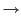

A common strategy is to do case-folding by reducing all letters to lower case. Often this is a good idea: it will allow instances of Automobile at the beginning of a sentence to match with a query of automobile. It will also help on a web search engine when most of your users type in ferrari when they are interested in a Ferrari car. On the other hand, such case folding can equate words that might better be kept apart. Many proper nouns are derived from common nouns and so are distinguished only by case, including companies (General Motors, The Associated Press), government organizations (the Fed vs. fed) and person names (Bush, Black). We already mentioned an example of unintended query expansion with acronyms, which involved not only acronym normalization (C.A.T.  CAT) but also case-folding (CAT cat).
For English, an alternative to making every token lowercase is to just make some tokens lowercase. The simplest heuristic is to convert to lowercase words at the beginning of a sentence and all words occurring in a title that is all uppercase or in which most or all words are capitalized. These words are usually ordinary words that have been capitalized. Mid-sentence capitalized words are left as capitalized (which is usually correct). This will mostly avoid case-folding in cases where distinctions should be kept apart. The same task can be done more accurately by a machine learning sequence model which uses more features to make the decision of when to case-fold. This is known as truecasing . However, trying to get capitalization right in this way probably doesn't help if your users usually use lowercase regardless of the correct case of words. Thus, lowercasing everything often remains the most practical solution.